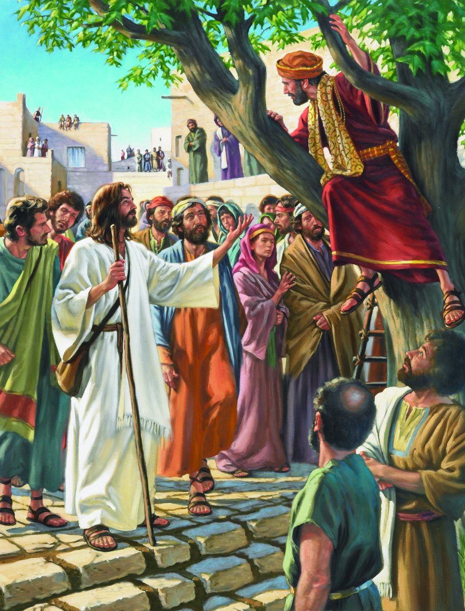

<div class="wrapper">
    <div class="content-container">
        <div class="christ-connection-container">
            <div class="christ-connection" @shutterOut>
                <p class="CC-content"> <span class="header">Christ Connection:</span>{{christConnection}}</p>
                <button mat-raised-button matTooltip="Connect With Us 6pm Tuesdays"  matTooltipPosition="right" class="connect-btn" (click)="onZoomConnect()"> Connect </button>
            
            </div>
        </div>
        <div class="sub-wrapper">
            
            <div class="content-container">
                
                <div class="current-lesson"> 
                    <div class="header">Current Lesson: Jesus and Zacchaeus (Luke 19: 1-10)</div>
                    <mat-divider class="horizontal-divider" ></mat-divider>
                    <p>God calls us to express our repantance through exuburant generosity. This is made clear when Jesus compares the 
                        kingdom of God as a treasure found in a field, so precious that the man who finds it is willing to give all he has 
                        to keep it (Matthew 13:44). Or consider Jesus' exhortation in Matthew 10: 5-8 "freely as you have recieved, freely give". The 
                        main point is simply this "store up your treasures in heaven" as opposed to chasing after earthly treasures that will fade away.
                        The focus of our current study is on Zacchaeus, a man who came to understand this kingdom truth well. 
                        Join us as we continue to Delve deeper into the scriptures and 
                        learn from the story of Zacchaeus the preciousness of Gods' grace.
                    </p>

                </div>
                <div class="connect-info">
                    <div class="text">Join Us On Zoom (Tuesday Evenings at 6pm):</div>
                    <div class="text">https://us02web.zoom.us/j/2535558117</div>
                </div>
            </div>
            <mat-divider vertical="true" class="vert-divider" ></mat-divider>
            <div class="img-container">
                
                <div class="caption">Luke 19: 1-10</div>
            </div>

        </div>
        
        <div class="past-lessons-container"></div>
        <div class="resources-containser">
            <div class="disclaimer">*Main Content Resource is LifeWay Gosple Project*</div>
        </div>
    </div>
</div>